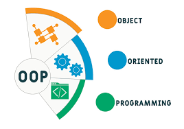

book_2 Conceitos Básicos
engineering Exercícios Práticos
Paradigma significa um modelo, um padrão, um exemplo ou uma estrutura teórica que serve de referência e estabelece os limites de como algo é compreendido ou feito.
Um paradigma de programação é uma abordagem ou estilo fundamental
para escrever código, funcionando como uma "filosofia" ou
"modelo" para estruturar e organizar programas.
Em outras palavras, ele molda a abordagem e a maneira como os
programadores pensam e resolvem problemas, oferecendo um
conjunto de regras, técnicas e abstrações que determinam como
a lógica é construída e o software é executado.
A escolha do paradigma impacta a eficiência, legibilidade e
manutenibilidade do código.


A Programação Orientada a Objetos (POO) é um paradigma de
programação que organiza o código em torno de "objetos"
que representam entidades do mundo real.
Imagine que você está criando um sistema para gerenciar uma
biblioteca: você teria objetos como Livro, Usuário, Empréstimo,
Autor, Editora, etc.
# Classe Cachorro - o molde
class Cachorro:
def __init__(self, nome_cachorro, raca_cachorro):
self.nome = nome_cachorro
self.raca = raca_cachorro
def latir(self):
return f"{self.nome} diz: Au au!"
# Objetos - cachorros específicos criados a partir do molde
rex = Cachorro("Rex", "Labrador")
bob = Cachorro("Bob", "Poodle")
print(rex.latir()) # Rex diz: Au au!
print(bob.latir()) # Bob diz: Au au!